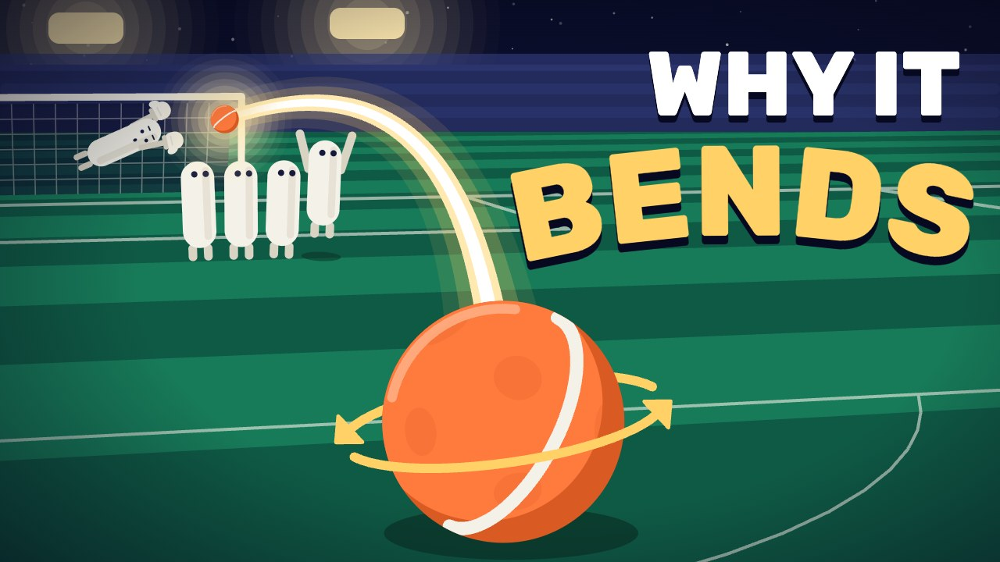
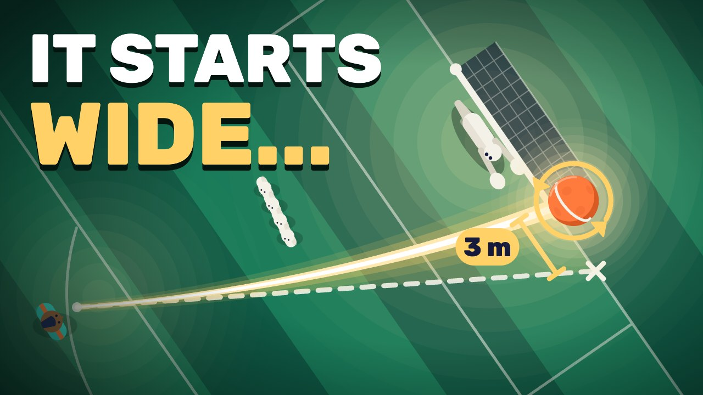

Three Spins and a Line: Blast It, Bend It, Dip It!
Ever kicked the ball way over the bar? Me too! In this video you'll learn 3 kicks: the laces drive, the curler and the volley. A line on the ball shows how it spins, so you can see why it blasts, bends or dips. Every part ends with a drill you can try at practice!
Tap once to get the video (48 MB), then tap again and choose "Save Video".
Download the video file (6:13, 1080p, 48 MB)
Other ways to save it on an iPhone
- Tap "Download the video file" above, then tap "Download".
- Open the Files app and go to Downloads.
- Tap the video, tap the Share button, then tap "Save Video". It goes to Photos.
Thumbnail sets
Sets of three thumbnails for this video. Each set is made for YouTube's "Test & Compare", which tries three thumbnails at once. Tap a picture to see it big.
Set 1: The bend



